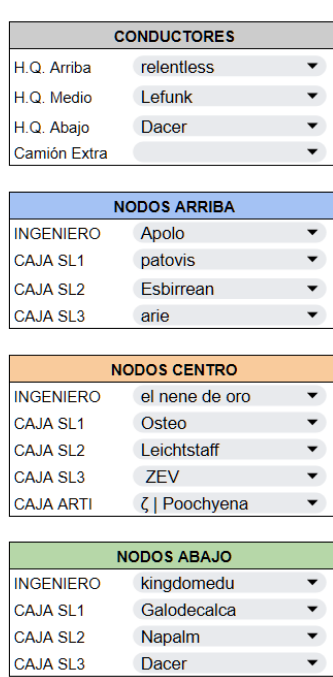
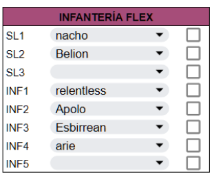
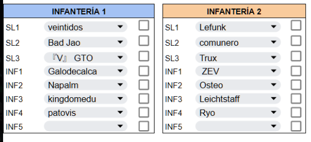
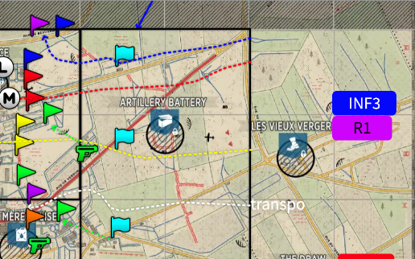
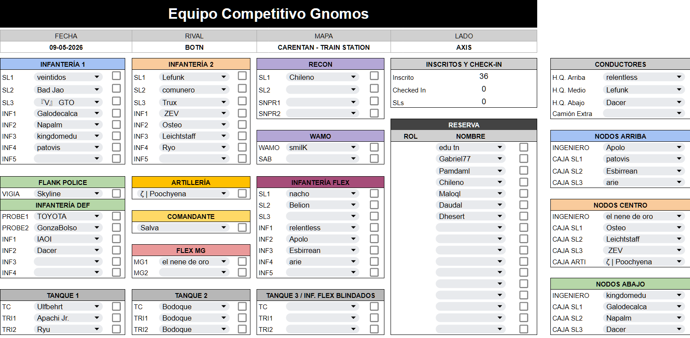

02 · Apartado
La capa macro previa al spawn: lo que se define antes de tocar Ready. Roster, stratsketch y aperturas.
Pre-match
Lo que se arma antes de tocar el spawn.
Todo partido serio se arma antes de tocar el spawn. Primero se cierra el roster: quién juega qué grupo, quién arma nodos y en qué HQ, quién maneja los camiones. Con el roster cerrado, comando dibuja el stratsketch: el mapa con la jugada encima —OPs, garrisons, posiciones de tanque—. De ahí salen las aperturas y el plan de después, los esquemas 3-2 y 2-3.
Estas secciones son la guía para leer todo esto. Es la diferencia entre saber a dónde ir apenas aparecés, o perder el primer minuto y medio preguntando por el chat.
Leer el roster
Cada fila es un jugador; cada bloque, un grupo. El color que tenés acá es el mismo que vas a buscar después en el stratsketch.
La columna Inicio es organizativa: si tenés responsabilidades más allá de escuadra e infantería, salen acá. Nodos (arriba/centro/abajo) son los grupos que plantan los nodos en cada HQ según el diseño del mapa —a esos jugadores de soporte se les asigna un SL igual: seguí la asignación tal cual está, buscar un rol de apoyo por tu cuenta te come tiempo que no tenés al inicio—. Conductores manejan los camiones de la apertura. Recon de inicio (OT1/OT2) sale de su escuadra asignada para llevar los tanques livianos de reconocimiento mientras dura esa fase.

La segunda columna es Comando: comandante, artillero, y los escuadrones de tanque —en partidas de 49v49 son tres, más un cuarto flexible si hay disponibilidad—.
Después vienen los grupos de juego. INF1/2/3 son los tres frentes: INF1 ataca el flanco fuerte, INF2 la puerta principal y el punto —el que más bala y artillería enemiga come—, INF3 el flanco débil, que además cubre que no te rodeen por ese lado. A cada jugador le cae un rol dentro del pelotón, pero no hace falta seguirlo a rajatabla.

FLEX AT recorre el mapa para plantar cañones anti-tanque donde el blindaje enemigo pega fuerte, o para ayudar a los tanques propios a bajarlo. FLEX es apoyo suelto para la infantería y ataques sorpresa, tanto en primera línea como en la retaguardia enemiga. RECON1/2 trabaja en pareja: el SL tira bengalas para ubicar al enemigo, el francotirador limpia infantería y ametralladoras difíciles de encontrar.
La defensa se divide en 3 o 4: PR1/PR2 (sonda) cubren el terreno arriba/izquierda y abajo/derecha del punto, DEF cubre la zona de captura y la entrada principal, y WIDE patrulla el lado fuerte —el mismo lado que INF1— para prevenir o alertar jugadas sorpresa.

toyota está en defensa PR1 y también asignado a nodos de ingeniería arriba/izquierda. Traducido: aparece como ingeniero, arma los nodos en ese HQ, y después se redespliega como soporte para tirarle cajas al SL de defensa que construye la guarnición inicial.

